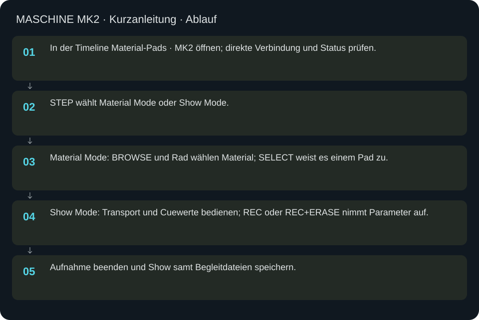
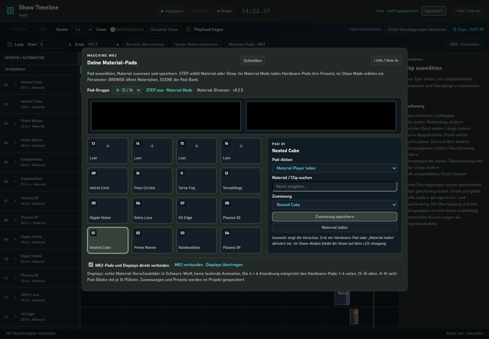
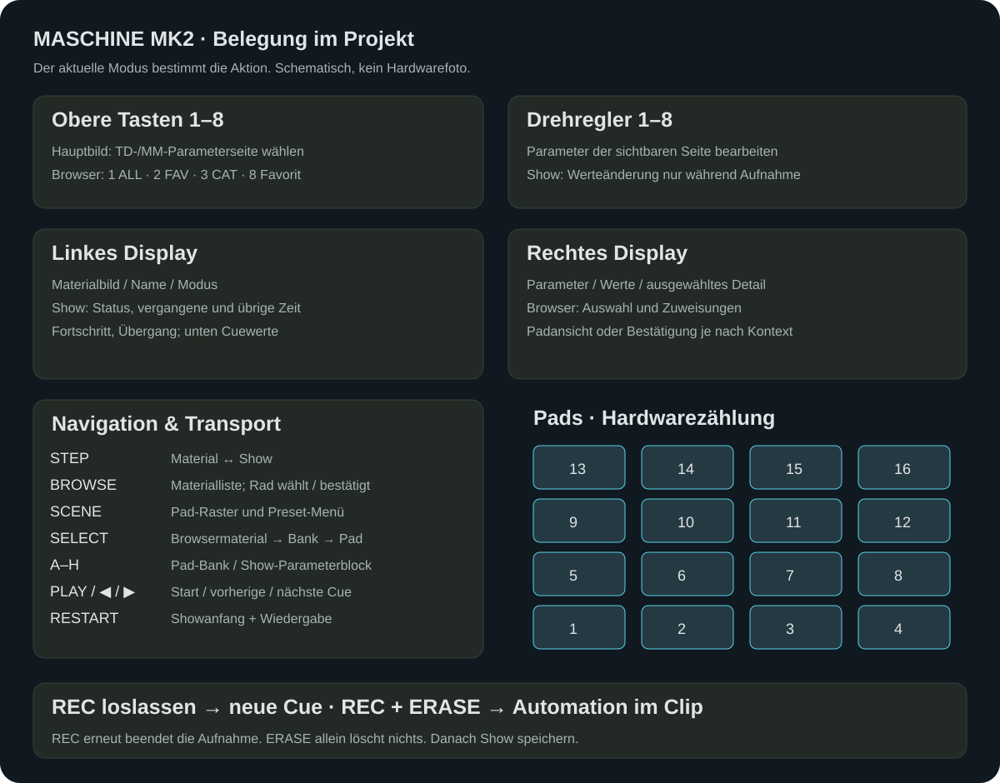

MASCHINE MK2 · Kurzanleitung
Direkte HID-Steuerung mit acht Pad-Bänken, Materialparametern, Showtransport und Aufnahme.
In welcher Reihenfolge?
- In der Timeline Material-Pads · MK2 öffnen; direkte Verbindung und Status prüfen.
- STEP wählt Material Mode oder Show Mode.
- Material Mode: BROWSE und Rad wählen Material; SELECT weist es einem Pad zu.
- Show Mode: Transport und Cuewerte bedienen; REC oder REC+ERASE nimmt Parameter auf.
- Aufnahme beenden und Show samt Begleitdateien speichern.



Schritt für Schritt
STEP / BROWSE / SCENE / SELECT
STEP wechselt Material/Show. BROWSE öffnet im Material Mode den Katalog auf dem MK2, SCENE die Pad-Bank. Rad drehen wählt Einträge, Rad drücken bestätigt. Die zusätzliche Desktop-Materialvorschau ist standardmäßig abgeschaltet; die Bilder auf den MK2-Displays bleiben erhalten. Auswahl, Laden und Player funktionieren weiterhin. In BROWSE aktiviert SELECT die direkte Padzuweisung: Bank A–H und Pad wählen; bei belegtem Pad das Überschreiben ausdrücklich bestätigen. BROWSE beziehungsweise SELECT im Zuweisungsbild bricht ab.
Acht obere Tasten und acht Regler
Im Hauptbild wählen die oberen Tasten die angezeigten TD-/MM-Parameterseiten. Die acht Regler bearbeiten die sichtbaren Parameter dieser Seite. Im Browser sind Taste 1 ALL, Taste 2 FAV, Taste 3 CAT und Taste 8 der Favoritenumschalter. Nicht belegte Tasten sind in diesem Kontext ohne Aktion. CAT öffnet Kategorien; Rad wählen und drücken.
Gruppen A–H und Pads 1–16
Im Material Mode wechseln A–H acht Presetbänke. Ein Pad lädt sein Material mit gespeicherten Werten. Im Show Mode ohne Aufnahme wählen A–H Parameterblöcke und Pads 1–8 den Parameter zur Anzeige; Pads 9–16 lösen dort keine Materialwechsel aus. Die physische Zählung beginnt unten links mit 1–4 und endet oben mit 13–16.
Rad und Presetbearbeitung
Im Pad-Raster wählt das Rad einen Platz, Druck öffnet dessen Kontextmenü. Belegte Materialpads bieten select, edit, browse, delete; leere Pads browse. Bei edit verändern Regler zunächst den Presetentwurf. Rad drücken beziehungsweise der Bestätigungsdialog erlaubt Speichern oder Abbrechen. Während eines ungespeicherten Entwurfs verhindert die Steuerung unbemerkten Datenverlust.
Transport
PLAY startet die Show; die links/rechts-Transporttasten wählen vorherige/nächste Cue. RESTART geht an den Showanfang und startet. Die direkte Belegung implementiert PLAY nicht als Pause-Umschalter. Pause und Stop sind in der Timeline beziehungsweise Show Control verfügbar. Die übrigen nicht in der Grafik belegten Hardwaretasten haben in diesem Projekt keine zugewiesene Aktion.
Aufnahme: zwei verschiedene Gesten
Im Show Mode REC drücken und loslassen startet eine neue Cue-Aufnahme. REC zusammen mit ERASE startet Automation in der laufenden Cue. Dabei werden nur die während dieser Aufnahme berührten Parameterkurven ersetzt; andere bleiben bestehen. REC während einer Aufnahme beendet sie. ERASE allein löscht keine Automation. Außerhalb einer Aufnahme bleiben Encoder im Show Mode gegen unbeabsichtigtes Überschreiben gesperrt. Clipwechsel/Transport/Moduswechsel während Aufnahme sind blockiert; zuerst REC beenden.
Showwerte mit dem Rad
Im Show-Hauptbild wählt das Rad Länge, Übergangsart oder Übergangsdauer. Drücken schaltet die Bearbeitung um; Drehen ändert den ausgewählten Wert, erneutes Drücken beendet die Bearbeitung. Die Unterstreichung zeigt den Fokus, die invertierte Darstellung den Bearbeitungszustand.
Linkes und rechtes Display
Material Mode zeigt Materialbild und Name, Modus sowie Parameterseiten. Das sind monochrome Vorschaubilder, keine laufenden Farbanimationen. Show Mode zeigt Material, Playing/Paused/Stopped, vergangene und verbleibende Sekunden, Fortschrittsbalken und Übergangssymbol. Unten stehen Länge, Übergangsart und Dauer. Rechts stehen Parameterwerte beziehungsweise der gezielt gewählte Parameter. BROWSE zeigt Liste, Favoriten/Kategorien und Materialzuweisungen; Padansicht zeigt Bank und Belegung.
Leuchten verstehen
Materialpads: belegte Plätze dunkelblau/türkis, Auswahl hell, Tastendruck kurz rot. Im Show-Parameterbetrieb markiert Gelb die Auswahl und Blau geänderte/automatisierte Parameter. Aktive Gruppe ist gelb; Gruppen mit Inhalt beziehungsweise Parameteraktivität sind schwächer blau. REC blinkt während Aufnahme; ERASE blinkt zusätzlich bei Automation. Obere und Transporttasten haben feste Hardwarefarben; nur Pads und Gruppen sind RGB.
Beispiel ohne Überschreiben
STEP → Material. BROWSE → ALL → Material mit Rad wählen. SELECT → freie Bank B → leeres Pad 1. Dann SCENE → B → Pad 1 zum Laden. In der Timeline die Bank und Zuordnung überprüfen. Für eine Show zuerst eine eigene Variante speichern; STEP → Show → REC loslassen → Regler bewegen → REC stoppen → Timeline-Kurven ansehen → SPEICHERN.
Konfiguration und Prüfgrenze
config/material_pads.json speichert Bänke, Favoriten und Presetwerte; config/mk2_windows.json die Fensteranordnung. Softwaretests und ein erfolgreicher USB-Status belegen nicht automatisch jede physische Taste, Displaylesbarkeit oder Lichtfarbe. Eine neue vollständige Hardwareabnahme muss als eigener Gerätetest dokumentiert werden.
Eingaben & Beispiele
| Feld | Bedeutung | Beispiel |
|---|---|---|
padSearch | Material oder Cue in der browserbasierten Zuweisung suchen. | Plasma |
padBank | Eine von acht Bänken mit je 16 Pads. | A |
padKind | Materialpreset oder Show-Cue als Pad-Aktion. | material |
padTarget | Ziel aus dem tatsächlich verfügbaren Katalog auswählen. | Plasma |
Numerische Eingaben verwenden einen Punkt als Dezimaltrennzeichen. IPs, Pfade, Quellstarts und Universen zuerst mit der tatsächlichen Installation vergleichen.
Woran erkenne ich Erfolg?
Die erwartete Ansicht öffnet, Status und Vorschau entsprechen der gewählten Aktion, und es erscheint kein Fehler. Änderungen beim nächsten Laden beziehungsweise im Live-Status erneut lesen. Ein erfolgreicher Bildschirmtest beweist weder physische LED-Ausgabe noch korrekte Kameramessung.
Quellennachweis
Dateipfade im Projekt-Repository; die Onlinehilfe gibt keinen allgemeinen Dateisystemzugriff frei.
pixelblaze_mapper/mk2_workflow.pypixelblaze_mapper/mk2_td.pypixelblaze_mapper/maschine_mk2.pypixelblaze_mapper/timeline_assets/pads.js